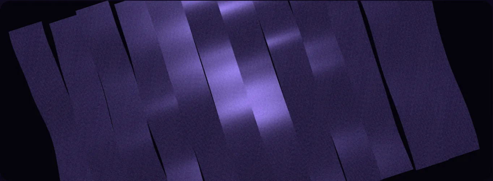
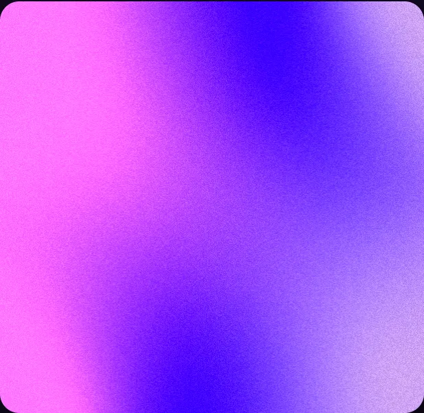
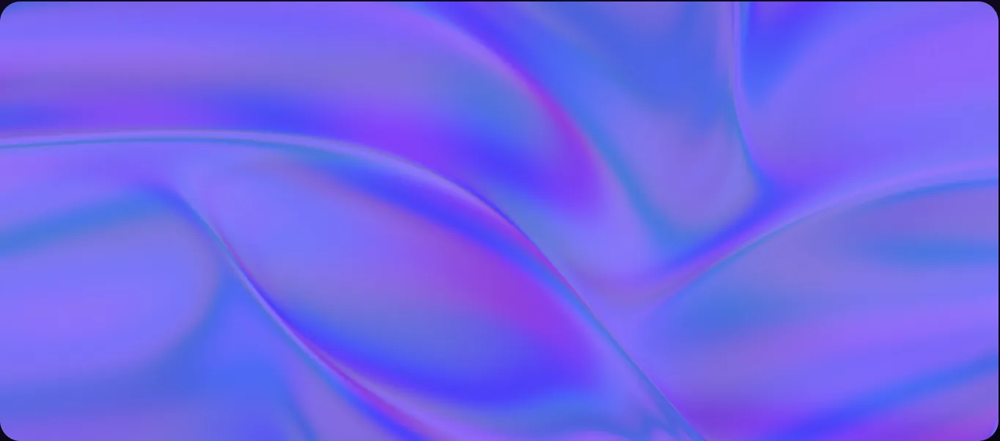
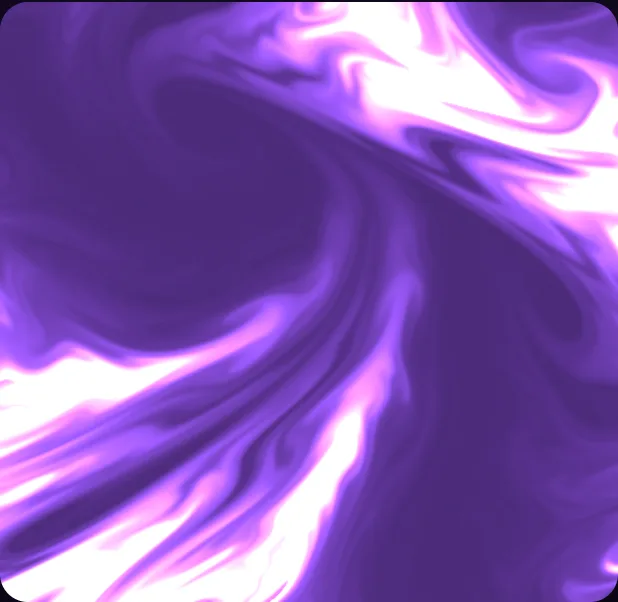
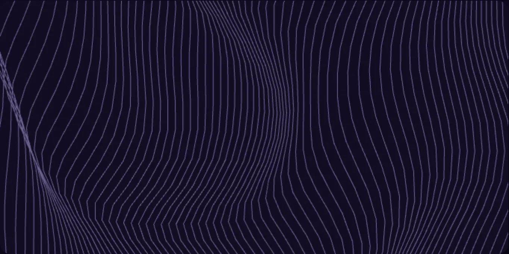
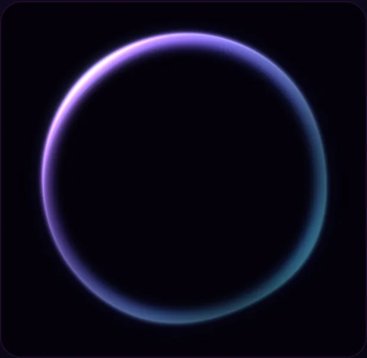
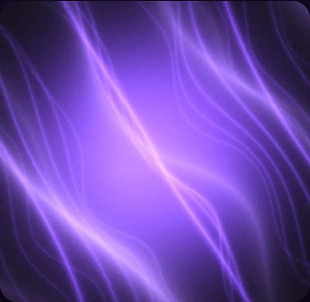
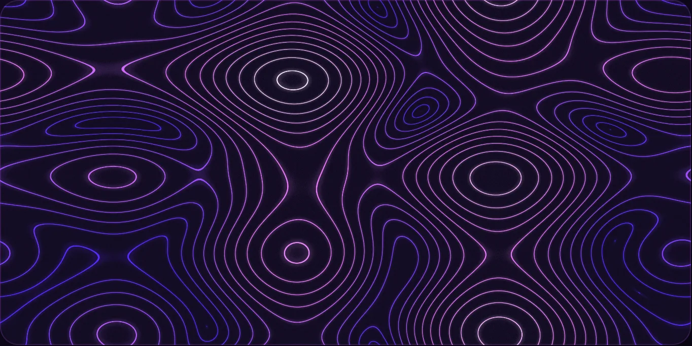
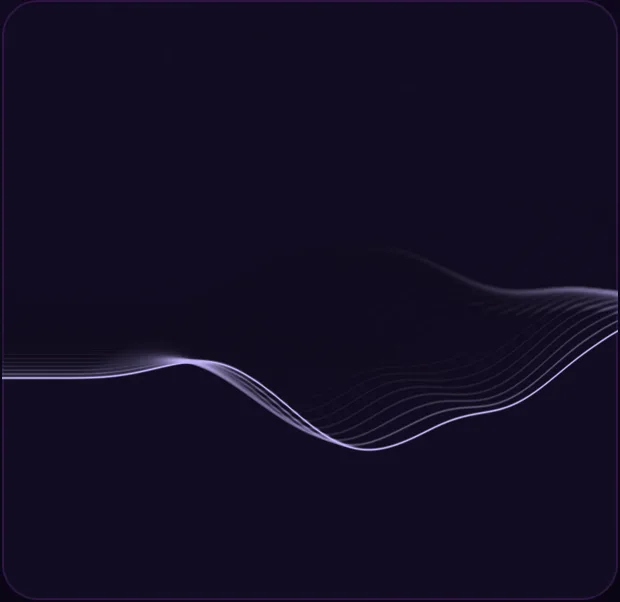
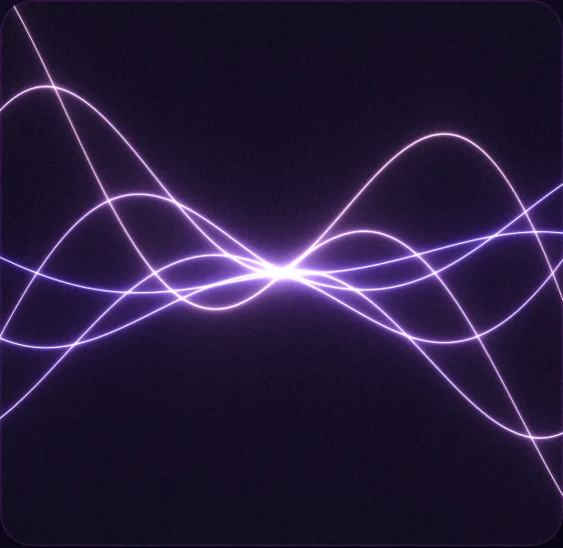

柔光
晨雾与暮色之间的那一抹紫。光线不刺眼，却足以照亮每一页笔记。
光线的三条法则
晨雾与暮色之间的那一抹紫。光线不刺眼，却足以照亮每一页笔记。
光标不是装饰，是风。靠近时花瓣退让，静止时它们回到呼吸的轨道。
灵感不必宏大。一句观察、一次调试、一场雨后的散步，都可以成为笔记。
Matter.js · Constraints
巨型标题是坚硬的地面。花瓣服从重力——拖拽、抛掷、滚动施力。这是温室里唯一允许失控的地方。
// https://brm.io/matter-js/demo/#constraints — 本页即按此逐参数运行
var Engine = Matter.Engine,
Render = Matter.Render,
Runner = Matter.Runner,
Composite = Matter.Composite,
Constraint = Matter.Constraint,
MouseConstraint = Matter.MouseConstraint,
Mouse = Matter.Mouse,
Bodies = Matter.Bodies;
var engine = Engine.create(),
world = engine.world;
var render = Render.create({
element: document.body,
engine: engine,
options: { width: 800, height: 600, showAngleIndicator: true }
});
Render.run(render);
var runner = Runner.create();
Runner.run(runner, engine);
// —— ① stiff global anchor
var body = Bodies.polygon(150, 200, 5, 30),
constraint = Constraint.create({ pointA: { x: 150, y: 100 }, bodyB: body, pointB: { x: -10, y: -10 } });
Composite.add(world, [body, constraint]);
// —— ② soft global anchor
body = Bodies.polygon(280, 100, 3, 30);
constraint = Constraint.create({ pointA: { x: 280, y: 120 }, bodyB: body, pointB: { x: -10, y: -7 }, stiffness: 0.001 });
Composite.add(world, [body, constraint]);
// —— ③ damped soft global anchor
body = Bodies.polygon(400, 100, 4, 30);
constraint = Constraint.create({ pointA: { x: 400, y: 120 }, bodyB: body, pointB: { x: -10, y: -10 }, stiffness: 0.001, damping: 0.05 });
Composite.add(world, [body, constraint]);
// —— ④ revolute single
body = Bodies.rectangle(600, 200, 200, 20);
var ball = Bodies.circle(550, 150, 20);
constraint = Constraint.create({ pointA: { x: 600, y: 200 }, bodyB: body, length: 0 });
Composite.add(world, [body, ball, constraint]);
// —— ⑤ revolute multi
body = Bodies.rectangle(500, 400, 100, 20, { collisionFilter: { group: -1 } });
ball = Bodies.circle(600, 400, 20, { collisionFilter: { group: -1 } });
constraint = Constraint.create({ bodyA: body, bodyB: ball });
Composite.add(world, [body, ball, constraint]);
// —— ⑥ stiff multi
var a = Bodies.polygon(100, 400, 6, 20),
b = Bodies.polygon(200, 400, 1, 50);
constraint = Constraint.create({ bodyA: a, pointA: { x: -10, y: -10 }, bodyB: b, pointB: { x: -10, y: -10 } });
Composite.add(world, [a, b, constraint]);
// —— ⑦ soft multi
a = Bodies.polygon(300, 400, 4, 20);
b = Bodies.polygon(400, 400, 3, 30);
constraint = Constraint.create({ bodyA: a, pointA: { x: -10, y: -10 }, bodyB: b, pointB: { x: -10, y: -7 }, stiffness: 0.001 });
Composite.add(world, [a, b, constraint]);
// —— ⑧ damped soft multi
a = Bodies.polygon(500, 400, 6, 30);
b = Bodies.polygon(600, 400, 7, 60);
constraint = Constraint.create({ bodyA: a, pointA: { x: -10, y: -10 }, bodyB: b, pointB: { x: -10, y: -10 }, stiffness: 0.001, damping: 0.1 });
Composite.add(world, [a, b, constraint]);
// 四面静态墙
Composite.add(world, [
Bodies.rectangle(400, 0, 800, 50, { isStatic: true }),
Bodies.rectangle(400, 600, 800, 50, { isStatic: true }),
Bodies.rectangle(800, 300, 50, 600, { isStatic: true }),
Bodies.rectangle(0, 300, 50, 600, { isStatic: true })
]);
var mouse = Mouse.create(render.canvas),
mouseConstraint = MouseConstraint.create(engine, {
mouse: mouse,
constraint: { angularStiffness: 0, render: { visible: false } }
});
Composite.add(world, mouseConstraint);
render.mouse = mouse;
Render.lookAt(render, { min: { x: 0, y: 0 }, max: { x: 800, y: 600 } });
拖拽 · 滚动 · 点击
暴风雨过境
光在裂缝里放电。整座温室，屏住呼吸。
Selected Works · Grown in this garden

黑暗，是这座温室最深的底色
Lumen Bloom · interactive 3D specimen
React Bits · Animations, studied & ported
<Specimen Cabinet · glTF />
Poly Haven CC0 真实扫描植物：勋章菊 × 盆栽，draco 压缩 glTF + 摄影棚 IBL，入视口才加载。
<Spotlight />
光标扫过之处，聚光灯点亮句子——逐词对焦、景深虚化。
<GlareHover />
悬停这张卡：3D 倾随指针，斜向高光扫过表面。
<PixelTransition />

像素马赛克在视口内逐格溶解成照片。
<Magnet />
磁吸：指针靠近时元素被牵引，松手弹回。
<SplashCursor / 风场光标>
首屏 WebGL 花瓣场即同款思路：光标=风，点击=冲击波，全站常驻。
<AnimatedCounter />
入视口起跳的数字滚动，缓出收敛。
<DecryptedText />
入视口逐字解密——官方同字符集、同 50ms 步进。
<BlurText />
iridescence, physics and whitespace bloom together
逐词从模糊中落位：blur 10→5→0 两段关键帧。
<ShinyText />
GROWN IN THE DARK · SHINE WITHIN
渐变流光文字——纯 CSS background-position，零 JS 开销。
<RotatingText />
字符级轮播进出场，离屏与后台自动暂停。
<TextType />
打字机循环：输入·停顿·删除·换句，光标呼吸闪烁。
<CircularText />
环形旋转字：悬停 4 倍速，离屏与后台自动暂停。
<Lottie · Violet Bloom />
text-to-lottie 技能产出：90 帧无缝呼吸绽放，官方 Skottie 播放器逐帧验证，离屏自动暂停。
<Beams / 光柱>

官方 r3f 版以 vanilla three.js 等价移植：Physical ShaderLib 注入 cnoise 顶点位移，12 束光柱明暗流动。
<FoldText / 折纸展开>
官方 3D 铰链折字：每字沿底边绕 X 轴翻折入场，折痕阴影随角度衰减。
<MaskedHeading / 影像题字>
官方字形剪切影像标题：字内流动真实照片，指针视差 + 缓慢漂移，入屏逐词升起。
<ParticleText / 粒子聚字>
官方画布采样聚字：数千粒子从四散到聚拢成字，光标斥力拨开星尘。
<StrokeText / 描边书写>
官方 SVG 笔画描摹：悬停即逐字书写轮廓，随后色彩擦除式填充。
<Grainient / 颗粒渐变场>

官方 GLSL3 颗粒渐变场逐行原样：Perlin 旋转 + 正弦翘曲 + 电影颗粒，亮色主题自动切换墨水混色。
<Iridescence / 虹彩干涉>

官方八重余弦干涉场 GLSL 原样：指针推动光程差，紫罗兰虹彩随视线流动。
<LiquidChrome / 液态铬面>

官方九采样抗锯齿液态场 GLSL 原样：正弦折射的紫色金属液面，指针激起涟漪。
<Waves / 游动波纹>

官方 Perlin 线阵 + 弹簧-摩擦光标扰动逐行原样：一千多个质点在波面下缓慢洄游。
<Orb / 呼吸光球>

官方 simplex 噪声光球原样：色带沿边缘轮转，悬停时球面泛起涟漪并缓缓自转。
<GhostFibers / 幽灵纤维>

官方多层极坐标扭曲纤维原样：夜光菌丝般的辉光在暗场中缓慢蔓延，两主题均保持深空底色。
<Topography / 等高线地貌>

官方四组贝塞尔相位场原样：等高线如地形般缓慢形变，鼠标是一枚抬起地面的热力。
<Threads / 丝流>

官方 40 行柏林丝流原样：40 条曲线沿噪声场摆动，光标如指腹划过丝束激起涟漪。
<Lightfall / 落星光>
官方 Shadertoy 移植原样：39 步球面行进的虫洞视角，星迹沿螺旋角环坠落、随光标泛出晕团。
<WebThreads / 光丝>

官方 GLSL300es 原样：6 条相位错开的丝在 SDF 辉光里交缠，pinch 点被光标牵引左右偏摆。
在最安静的时刻
轻轻盛开
LUMEN VIOLA 不追逐喧闹。它邀请你放慢一拍——看清虹彩、物理与留白如何共同完成一场小型演出。
Field Notes
把界面做成一座会呼吸的温室：
— LUMEN VIOLA · 设计备忘
留白是空地，动效是微风，物理是真实的重量。
全站几乎单色紫。唯一的青只出现在光标与 HUD——破局点克制到一次就够。
每一次出现都回答一个问题：用户该看向哪里？少了干扰，多了叙事。
整页只留一处「失控」——物理花园。花瓣砸在标题上，比任何形容词都诚实。